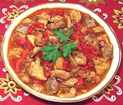

|
Chicken with Sweet PeppersSpain - Pollo al Chilindron | Sephardic - Armi de Gayna | ||||
| Makes: Effort: Sched: DoAhead: |
3 main *** 1-1/3 hrs Yes |
From the Spanish provinces of Navarra and Aragon, a delicious stew of chicken and sweet peppers. See Note-5 for details of prep and serving. | |||
| Armi de Gayna is a Sephardic Jewish version of this dish, which drops the ham and adds 1/2 t of ground allspice, a Turkish influence (biblio sf145). | |||||
|
|
1-1/2 1/2 ------ 2 4 2 8 1-1/2 1 2 1/2 1/4 1/3 ------ |
# t --- cl oz oz oz # T t t c --- |
Chicken meat (1) Salt ---- Garlic Onion Ham, Spanish (2) Tomatoes Red Bell Pepper Chili, dry (3) Olive Oil Paprika (3) Pepper Chicken Stock ---------- |
Prep - (25 min)
|
dmc_chkbpp1 111203 drcs143 - www.clovegarden.com
©Andrew Grygus - info@clovegarden.com - linking to
and non-commercial use of this page permitted